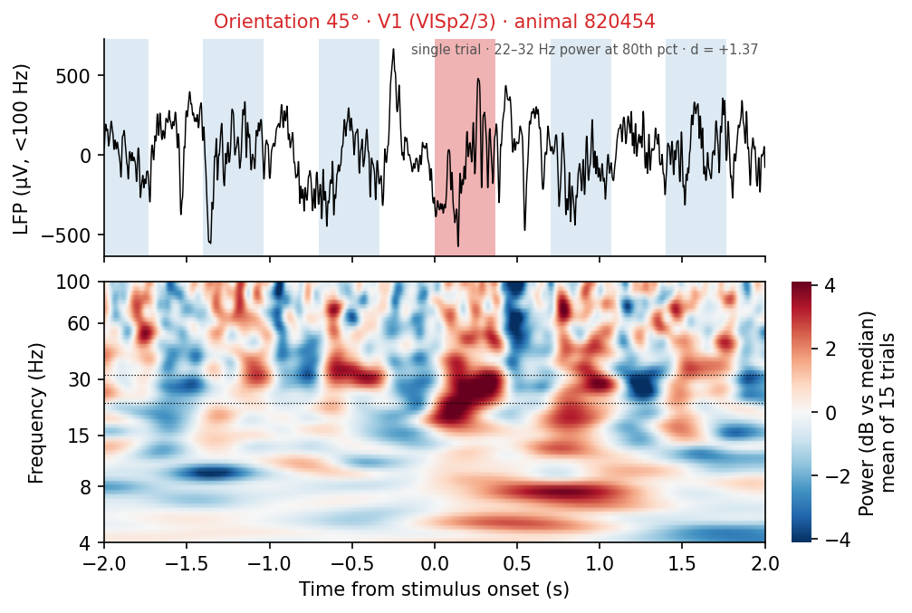
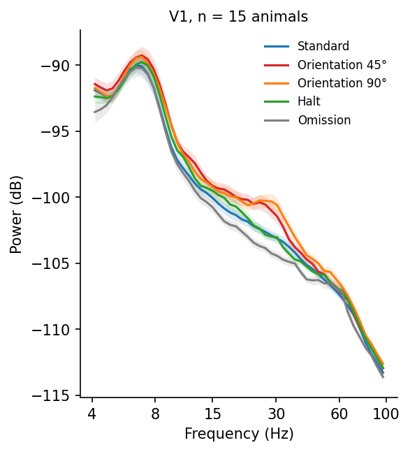
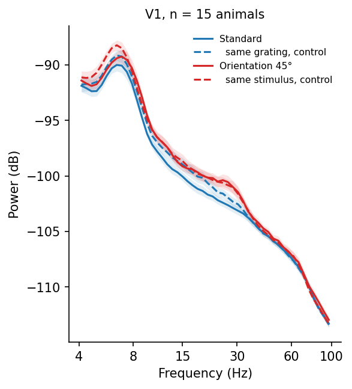
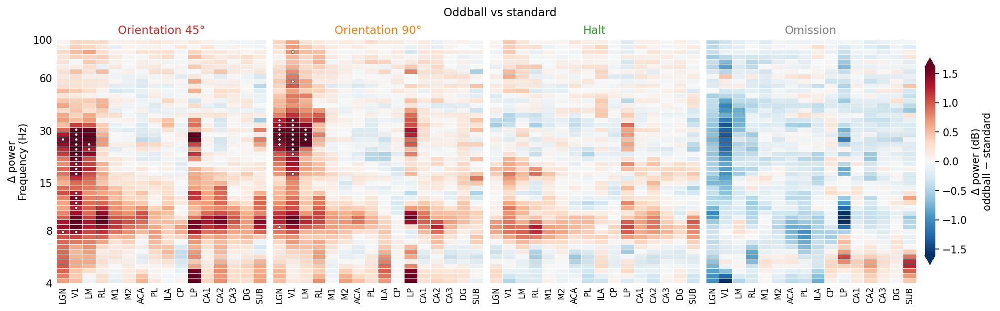
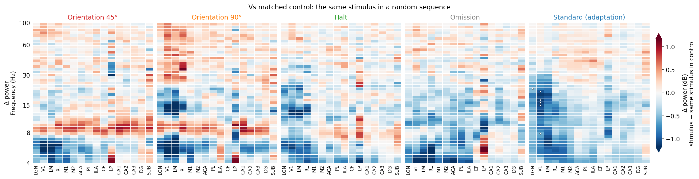

Interactive figure legend
A, one V1 trial (LFP below 100 Hz, aligned to stimulus onset; shading marks standards in blue and the event in its colour) above the spectrogram averaged over trials of the same event on the same channel. B, V1 power spectrum per condition, mean ± SEM across mice. C, the event and the standard (solid) next to the same stimuli in the matched control block (dashed); without a control, single-trial V1 power distributions. D, E, power difference in dB (red more, blue less) per area and frequency, event minus standard (D) or minus the same stimulus in the control block (E); dots mark cells where single-trial power reliably distinguishes the event from its reference across mice (mutual information > 0, FDR q < 0.05).
Mutual information measures how well the power of a single trial tells whether that trial was the event: 0 bits not at all, 1 bit perfectly; 0.04, 0.16 and 0.5 bits correspond to d′ of 0.5, 1 and 2. Event versus standard mixes a different stimulus with release from adaptation; the control block keeps the stimulus, and its orientation tuning, the same, and Standard (adaptation) compares the standard with its control.




